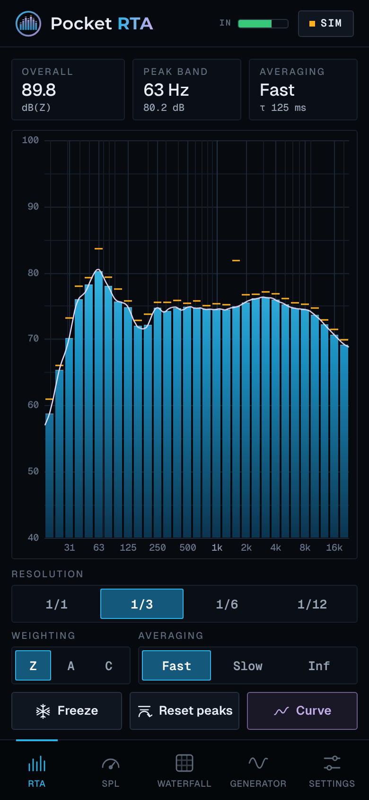
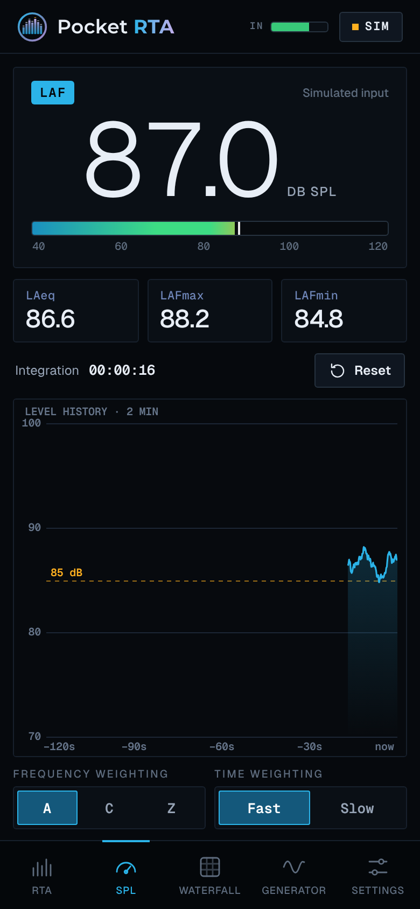
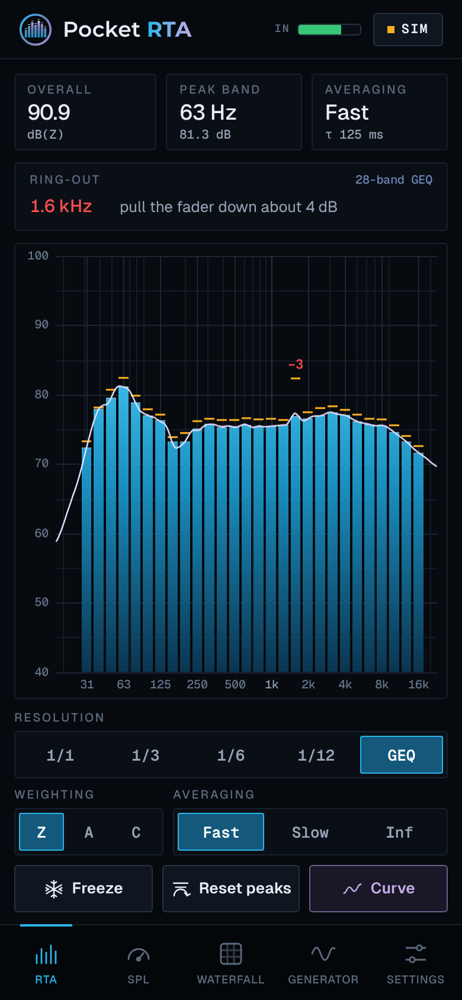

Pocket RTA
A spectrum analyzer and SPL meter for live sound, in your pocket. Point it at the room, see what the system is doing, and fix it.
Coming to the App Store. Pocket RTA is not a certified measurement instrument; readings depend on the microphone in your phone and on calibration.



What it does
- Real-time analyzer. 1/1, 1/3, 1/6 and 1/12-octave views from 20 Hz to 20 kHz, with peak hold, A, C and Z weighting and Fast, Slow and Infinite averaging.
- SPL meter. A, C and Z weighting, Fast and Slow response, Leq, max and min, and a two-minute level history.
- Calibration. Match the reading to a reference meter or an acoustic calibrator, and the offset is saved on your device.
- Signal generator. Sine oscillator from 20 Hz to 20 kHz, pink noise, white noise and a log sweep.
- Waterfall. A scrolling spectrogram to see how the sound changes over time.
- GEQ Assist. Shows the bands of your console's graphic EQ, finds a ringing frequency and tells you which fader to pull down and roughly how far. It only listens; you move the faders.
Private by design
Audio is processed on your device in real time. Nothing is recorded, stored or sent anywhere, and there are no accounts, ads or trackers. Read the privacy policy.
Questions
See support, or write to support@balancedigitalllc.com.